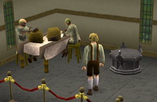

")
Steinzeit
Nur RuneScape-Mitglieder können mitmachen. Bitte werdet Mitglied, damit ihr auf dieses Feature zugreifen könnt.
Wenn ihr beim Fertigkeitstraining keine seltsamen Felsen mehr erhalten wollt, solltet ihr das bei den Archäologen im Museum von Varrock zur Sprache bringen, wenn ihr euch mit ihnen zum ersten Mal über die Statue unterhaltet.
Einführung

Bis zum heutigen Tage findet man überall Überreste dieser Schlachten. Bauern ruinieren sich ihre Pflüge, weil sie damit an einem der Überbleibsel hängen bleiben. Bergarbeiter stoßen tief im Felsen manchmal auf uralte mächtige Artefakte. Runenfertiger erhalten mitunter abnormal geformte Runensteine, da sich ihre Essenz dem Echo einer arkanen Macht gebeugt hat.
Oft werden diese Artefakte achtlos weggeworfen oder setzen auf dem Kaminsims Staub an, dabei kann man von diesen Überbleibseln längst vergangener Tage eine Menge lernen. Steine vergessen nie, daher stecken diese Stücke voller Geschichte. Wer mehr darüber wissen will, sollte seine Fundstücke den Archäologen im Museum von Varrock zeigen. Sie werden euch dann die Geschichte eines unglückseligen Magiers namens Dahmaroc erzählen, einem weltlichen Weisen und Handwerker, der leider in einer Ära der Zwietracht lebte.
Voraussetzungen
Nur Mitglieder können Felsen finden und alle notwendigen Fertigkeiten praktizieren. Mindestanforderungen gibt es allerdings keine.
Erste Schritte

Ihr erhaltet nur 2 Felsen pro Fertigkeit. Nachdem ihr den ersten Felsen in einer Fertigkeit erhalten habt, sinkt die Wahrscheinlichkeit, einen weiteren zu erhalten, um die Hälfte. Sobald ihr 2 Felsen habt, bekommt ihr von dieser Fertigkeit keine weiteren, bis ihr die Statue fertiggestellt habt.
Anmerkung: Beim Training von Kerkerkunde in Daemonheim werdet ihr keine Statuenteile erhalten.
Bei den folgenden Aktionen könnt ihr Felsen finden (es gibt aber noch weitere). Es empfiehlt sich, das Training zu variieren und auch mal ein paar neue Fertigkeiten auszuprobieren.
- Gewandtheit: Schließt die folgenden Kurse ab:
- Gnomen-Festung (einfach oder schwer)
- Gewandtheitspyramide
- Außenposten der Barbaren (einfach oder schwer)
- Affenatoll
- Wildnis
- Werwolf
- [Bild: Bandos' Thronsaal]
- Dorgesh-Kaan
- Gewandtheitsarena in Brimhaven (pro 10 Tickets eine Chance)
- Kochen: Bereitet Fische zu.
- Baukunst: Besucht euer Haus für mindestens eine Minute (nicht im Baumodus).
- Handwerk:: Herstellung von Goldschmuck; Verwendung von Leder und Drachenhaut; Herstellung geschmolzenen Glases, Töpfern auf einer Töpferscheibe (aber nicht das Brennen).
- Landwirtschaft: Gemüse, Hopfen, Kräuter, Blumen, Büsche und Obstbäume ernten; Setzlinge und Samen anpflanzen.
- Bognerei: Stellt unbespannte Bögen oder Armbrustgriffe her.
- Fischen: Fangt Fische mit Netz oder Reuse.
- Funkenschlagen: Steckt irgendwelche Scheite mit einer Zunderbüchse in Brand.
- Pflanzenkunde: Kombiniert unfertige Tränke mit Nebenzutaten (funktioniert nicht bei Barbaren-Tränken); säubern von Kräutern (mit einem freien Feld im Inventar).
- Jagen: Lest Spuren, betrachtet Kasten- und Felsbrockenfallen oder betreibt Falknerei.
- Bergbau: Erze, Kohle, Ton und Stein abbauen; Bergbau in der Höhle der lebenden Felsen (Kohle und Gold).
- Runenfertigung: Fertigt Runen.
- Schmieden: Verhüttet normale Erze oder fertigt Gegenstände aus normalen Erzen an; Herstellung von Kanonenbällen.
- Diebstahl: Taschendiebstahl; Diebstahl von Ständen; Diebstahl aus Truhen.
- Holzfällerei: Fällt irgendwelche Bäume oder Efeu oder helft in der Sägemühle aus
Belohnungen
Für jede der oben genannten nicht-kampfbezogenen Fertigkeiten erhaltet ihr zwei Felsen, die ihr zu einem Statuenstück zusammensetzen könnt. In dieser Fertigkeit werdet ihr dann erst wieder Felsen bekommen, wenn ihr die Felsen aus allen anderen nicht-kampfbezogenen Fertigkeiten gesammelt habt.
Haltet Ausschau nach neuen Felsen. Wenn ihr die Statue komplett wiederaufgebaut habt, steigt euer Respekt beim Forschungsteam des Varrock-Museums. Besonders Fleißige können sich auch eine Extra-Belohnung verdienen.
Entwicklerteam
Entwicklung: Marion C
Grafik: Alex R, Wing C
Qualitätssicherung: Nicola C, Adam D, Sarah J
Audio: Adam B

Weitere Artikel in Spaß für zwischendurch
|
|
|
Weiterführende Informationen Wenn euch dieser Artikel nicht weitergeholfen hat, könnt ihr in den folgenden Kapiteln der RuneScape-Webseite mehr Informationen finden:
|
|